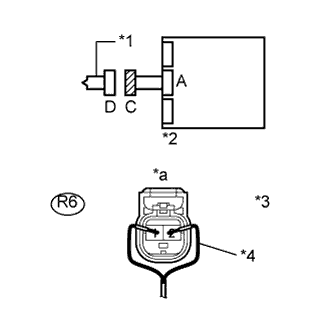
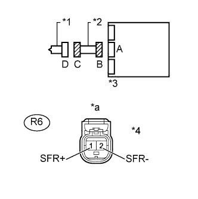
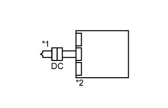

DTC B1825/56 Короткое замыкание в цепи левого бокового пиропатрона |
DTC B1826/56 Обрыв цепи левого бокового пиропатрона |
DTC B1827/56 Короткое замыкание на GND в цепи левого бокового пиропатрона |
DTC B1828/56 Короткое замыкание на B+ в цепи левого бокового пиропатрона |
| Код DTC | Условие обнаружения DTC | Неисправный участок |
| B1825/56 | Выполняется одно из следующих условий:
|
|
| B1826/56 | Выполняется одно из следующих условий:
|
|
| B1827/56 | Выполняется одно из следующих условий:
|
|
| B1828/56 | Выполняется одно из следующих условий:
|
|

| 1.ПРОВЕРЬТЕ ЛЕВУЮ ПОДУШКУ БЕЗОПАСНОСТИ ПЕРЕДНИХ СИДЕНИЙ (ЛЕВЫЙ БОКОВОЙ ПИРОПАТРОН) |
|  |
Выключите зажигание.
Отсоедините провод от отрицательного (-) вывода аккумуляторной батареи и подождите не менее 90 секунд.
Отсоедините разъем от левой подушки безопасности передних сидений.
Подсоедините красную сторону провода SST (сопротивление: 2,1 Ом) к разъему С.
Подсоедините провод к отрицательному (-) выводу аккумуляторной батареи и подождите не менее 2 с.
Установите замок зажигания в положение ON (ВКЛ) и подождите не менее 60 секунд.
Сбросьте коды DTC (Нажмите здесь).
Выключите зажигание.
Установите замок зажигания в положение ON (ВКЛ) и подождите не менее 60 секунд.
Проверьте коды DTC (Нажмите здесь).
| Результат | Следующий шаг |
| NG | А |
| OK (для сидений с ручным приводом) | B |
| OK (для сидений с электроприводом) | C |
| OK (для сидений с функцией облегчения посадки "Walk In") | D |
| *1 | Левый боковой пиропатрон |
| *2 | Центральный блок управления системы SRS |
| *3 | Разъем C |
| *4 | SST |
| *a | Вид спереди разъема со стороны жгута проводов: (к левому боковому пиропатрону) |
| *b | Цвет: Красный |
|
| ||||
|
| ||||
|
| ||||
| D | ||
| ||
| 2.ПРОВЕРЬТЕ НАПОЛЬНЫЙ ПРОВОД № 2 (ЦЕПЬ ЛЕВОГО БОКОВОГО ПИРОПАТРОНА) |
|  |
Выключите зажигание.
Отсоедините провод от отрицательного (-) вывода аккумуляторной батареи и подождите не менее 90 секунд.
Отсоедините SST от разъема С.
Отсоедините разъемы от центрального блока управления системы SRS.
Подсоедините провод к отрицательному (-) выводу аккумуляторной батареи и подождите не менее 2 секунд.
Измерьте напряжение в соответствии со значениями, приведенными в таблице.
| Контакты для подключения диагностического прибора | Положение переключателя | Заданные условия |
| R6-1 (SFL+) - масса | Зажигание включено | Менее 1 В |
| R6-2 (SFL-) - масса | Зажигание включено | Менее 1 В |
Выключите зажигание.
Отсоедините провод от отрицательного (-) вывода аккумуляторной батареи и подождите не менее 90 секунд.
Измерьте сопротивление в соответствии со значениями, приведенными в таблице ниже.
| Контакты для подключения диагностического прибора | Условие | Заданные условия |
| R6-1 (SFL+) - R6-2 (SFL-) | Всегда | Менее 1 Ом |
Разомкните механизм предотвращения срабатывания, встроенный в разъем B (Нажмите здесь).
Измерьте сопротивление в соответствии со значениями, приведенными в таблице ниже.
| Контакты для подключения диагностического прибора | Условие | Заданные условия |
| R6-1 (SFL+) - R6-2 (SFL-) | Всегда | 1 МОм или более |
| R6-1 (SFL+) - масса | Всегда | 1 МОм или более |
| R6-2 (SFL-) - масса | Всегда | 1 МОм или более |
| *1 | Левый боковой пиропатрон |
| *2 | Напольный провод № 2 |
| *3 | Центральный блок управления системы SRS |
| *4 | Разъем C |
| *a | Вид спереди разъема со стороны жгута проводов: (к левому боковому пиропатрону) |
|
| ||||
| OK | |
| 3.ПРОВЕРЬТЕ ЦЕНТРАЛЬНЫЙ БЛОК УПРАВЛЕНИЯ СИСТЕМЫ SRS |
|  |
Подсоедините разъемы к левой боковой подушке безопасности переднего сиденья и центральному блоку управления системы SRS.
Подсоедините провод к отрицательному (-) выводу аккумуляторной батареи и подождите не менее 2 с.
Установите замок зажигания в положение ON (ВКЛ) и подождите не менее 60 секунд.
Удалите коды DTC (Нажмите здесь).
Выключите зажигание.
Установите замок зажигания в положение ON (ВКЛ) и подождите не менее 60 секунд.
Проверьте коды DTC (Нажмите здесь).
| *1 | Левый боковой пиропатрон |
| *2 | Центральный блок управления системы SRS |
|
| ||||
| OK | ||
| ||